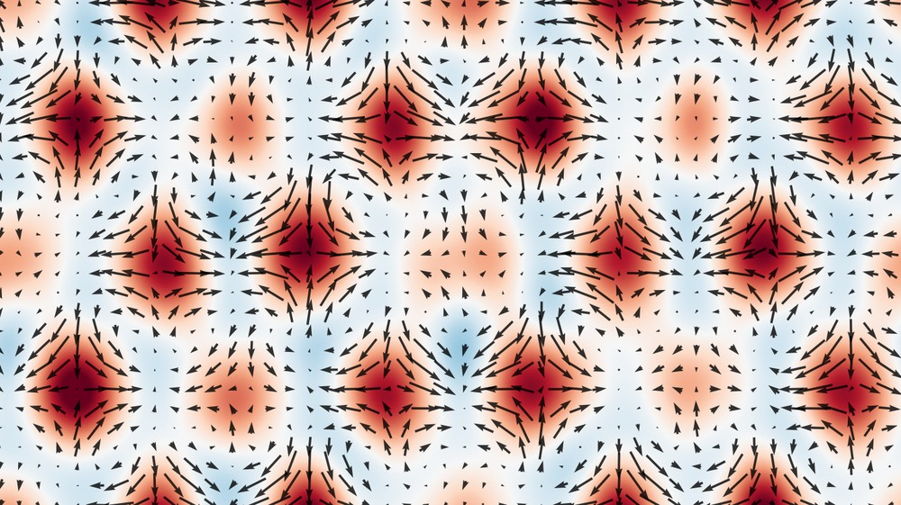
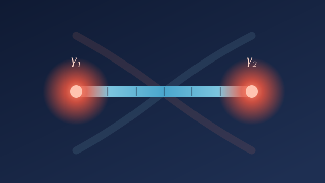
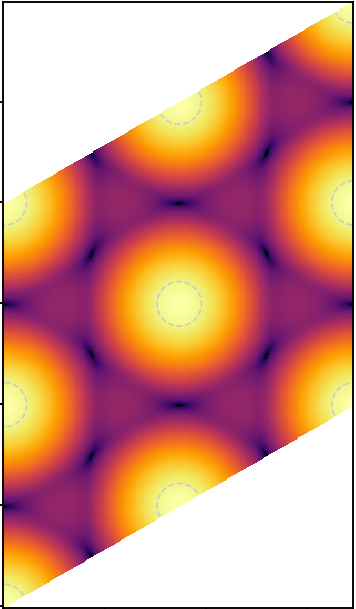
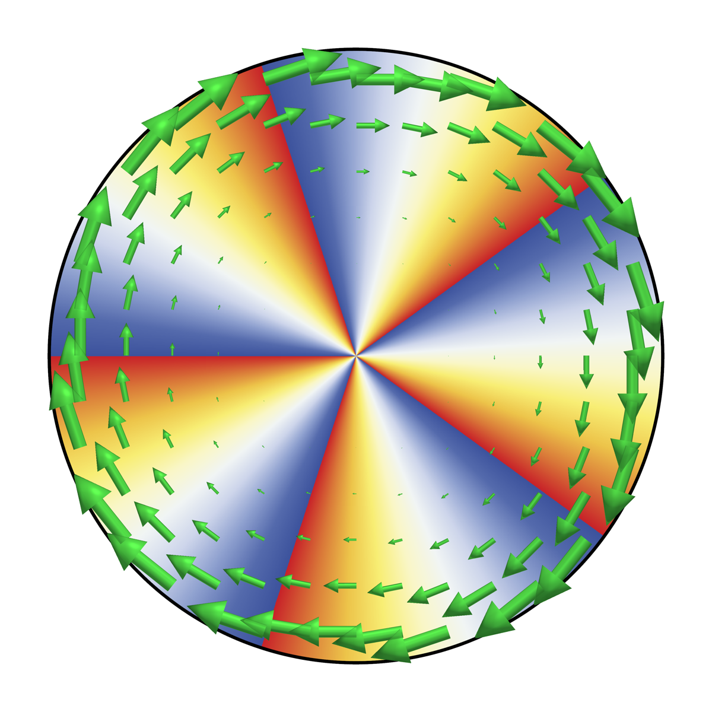

About
- I am
- a Physics PhD candidate advised by Di Xiao and Ting Cao at the University of Washington, graduating in 2027.
- I was
- a research intern at Los Alamos National Laboratory (2023, 2024) and Lawrence Berkeley National Laboratory (2019).
- My research is
- building computational and machine-learning models for quantum many-body systems, from transformer neural-network quantum states, to topological quantum computing, to the theory behind magnetism and superconductivity.
- Off the clock
- I enjoy tea 🍵 🧋, tennis, and biking around Seattle's lakes.
Selected Work
Projects

Neural Quantum States for Correlated Electrons
A transformer wavefunction that solves the quantum many-body problem — optimized by variational Monte Carlo and validated to exact-diagonalization precision on GPUs.
View project →
Braiding Majorana Zero Modes for Fault-Tolerant Topological Qubits
Two theory papers — one first-author (Physical Review B) — on braiding Majorana zero modes in topological-superconductor nanowires: the pieces of a fault-tolerant topological qubit.
View project →
A Continuum Hartree–Fock Many-Body Solver
A from-scratch self-consistent mean-field solver for interacting 2D electrons, built around a linear-response → instability → self-consistency diagnostic pipeline.
View project →
Quantum Geometry of Superconductivity & Phonon Magnetism
Three first-author theories on how the quantum geometry of electron bands — Berry curvature and the quantum metric — sets the size of a Cooper pair and the magnetic moment of a phonon.
View project →Publications
Selected papers
8 papers · 180+ citations · in journals including Nature Materials, Physical Review Letters, and Physical Review B. Full list on Google Scholar.
-
Quantum Geometric Quadrupole of Cooper Pairs
-
Gauge theory of giant phonon magnetic moment in doped Dirac semimetals
-
Geometric Origin of Phonon Magnetic Moment in Dirac Materials
-
Non-Abelian statistics of Majorana zero modes in the presence of an Andreev bound state